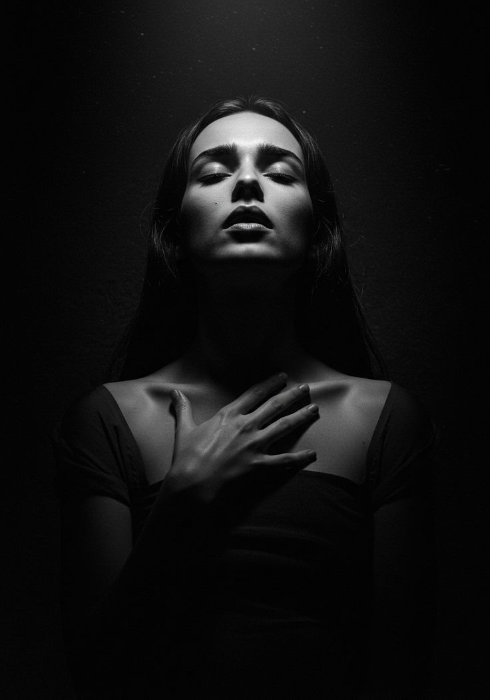
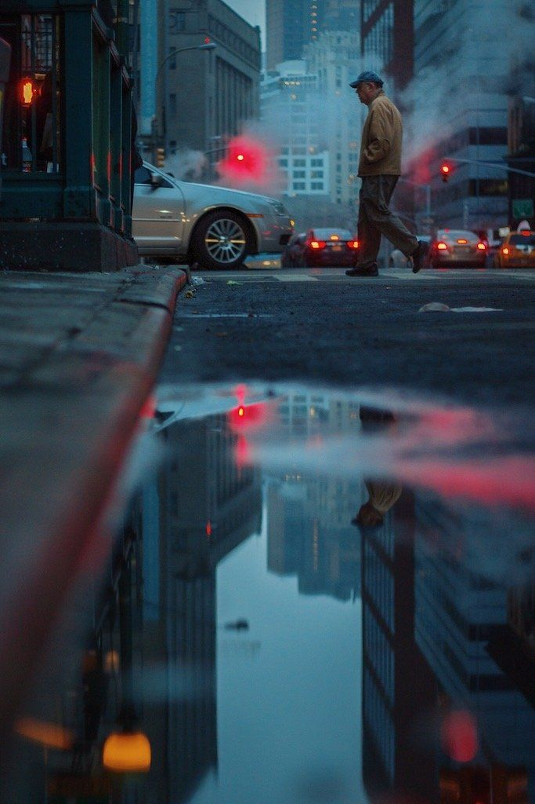
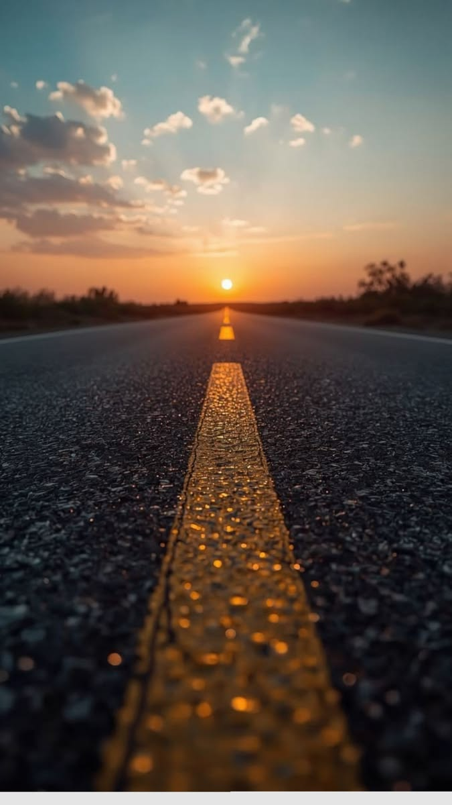

"Короткий опис автобіографії." Я фотограф, кінорежисер, письменник і спікер — у серці, оповідач, який досліджує людське існування та наш пошук сенсу.

- - шаблон - -
"Короткий опис автобіографії." Я фотограф, кінорежисер, письменник і спікер — у серці, оповідач, який досліджує людське існування та наш пошук сенсу.

Портретна фотографія завжди була моїм першим коханням — саме тут поєднуються мій психологічний досвід та мої навички фотографа.
Натхненний Рембрандтом та старими майстрами, я спеціалізуюся на створенні портретів, які одночасно є позачасовими та сучасними — поєднуючи технічну точність із чутливістю до характеру та присутності.
Оскільки штучний інтелект та синтетичні візуальні ефекти стають дедалі поширенішими, я зосереджуюся на тих речах, які неможливо створити: справжнє світло, що формує ваші риси обличчя, справжня присутність та портрет, який фіксує те, ким ви є насправді в той момент, у якому ви справді пережили. Тож кожен портрет — це дослідження характеру та тихої сили, яка походить від того, що вас справді видно.
більше
Коли повсякденна робота стає технічною, вулична фотографія повертає мене до інстинкту — до бачення, а не до вирішення проблем.
Мене приваблює нефільтрований ритм міського життя: швидкоплинні вирази, зміна світла, покинуті предмети та тиха хореографія між людьми та архітектурою. Мої роботи охоплюють контраст — глибокі тіні, різкі відблиски та графічні форми, що створюються, коли сонячне світло прорізає бетонні каньйони. Кожен кадр — це пошук краси в непоміченому та буденному.
Я вітаю співпрацю та проекти на замовлення, які поєднують автентичну розповідь із сильною візуальною ідентичністю — від міських вулиць до далеких горизонтів.
більше
Нові контексти породжують нові напрямки.
Після років документування ритму та енергії міського життя, мій переїзд з Лондона до Північного Йоркширу ознаменував початок спокійнішого, більш споглядального розділу в моїй творчості. Оточений відкритими пейзажами та повільнішими ритмами, я почав фотографувати сцени сільського життя — людей, текстури та невеликі ритуали, що визначають життя за межами міста. Ця робота досліджує наші стосунки з місцем, погодою, часом та незмінною красою, що знаходиться в простоті.
Хоча обстановка змінилася, мій підхід залишається незмінним: спостерігати чесно та знаходити сенс у повсякденному житті.
більше